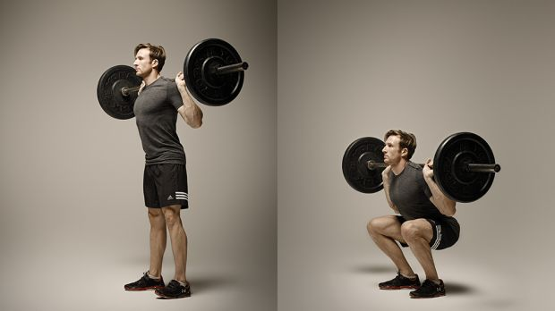

Flat dumbell press- This is a chest targeted workout which works your mid to lower chest
T-bar row- This is a back targeted workout. It specifically targets the upper back and upper lats.
Barbell Back Squat- The barbell squat is very good leg workout. It engages the quads and hamgstrings.
Tricep Pulldowns- this is an excellent tricep workout to target the long head of the triceps.
Preacher Curls- This is a bicep targeted workout that depending on your grip can work the short head or long head of the biceps.